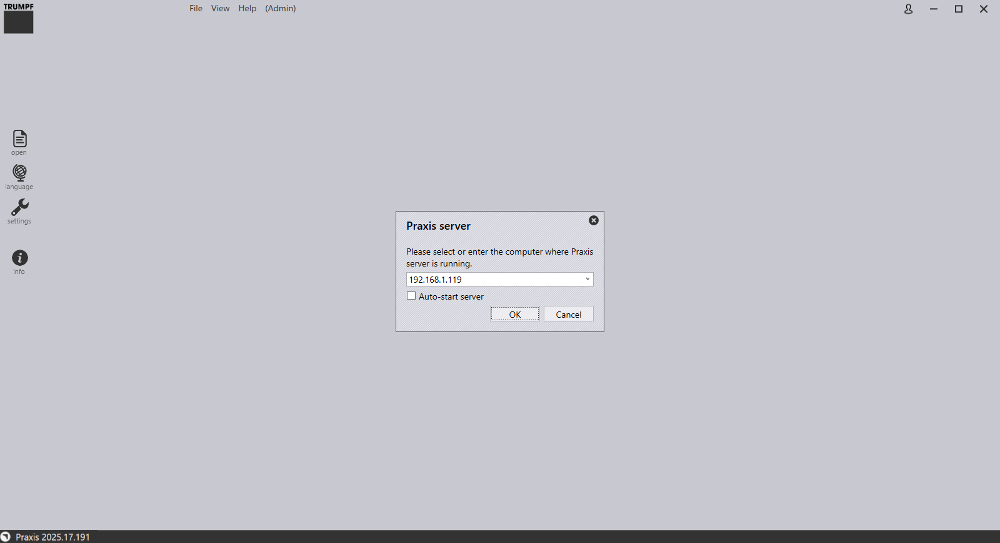
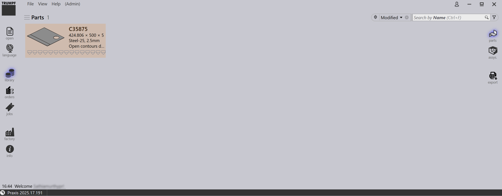

Klientinstallation
-
Brug det samme installationsprogram, der blev brugt til TruSmartCAM Server-installationen. På klientmaskinen skal du efter at have kørt installationsprogrammet vælge Client-muligheden på komponentvalgssiden. Vælg de nødvendige TruSmartCAM-værktøjer, og klik på Next.

-
Ready to Install-siden opsummerer installationslisten. Klik på Install for at fortsætte med installationen på klient- maskinen.

-
Når installationen er fuldført, vælg Launch TruSmartCAM-afkrydsningsfeltet, og klik på Finish. Når TruSmartCAM-skærmen starter, angiv servernavnet eller IP-adressen på TruSmartCAM-server-pc’en. Klik på OK .

-
Når forbindelsen er oprettet, viser TruSmartCAM Sign up-prompten med programmør- tilladelse. Angiv Email ID, password om nødvendigt, og klik på OK. TruSmartCAM- bibliotekssiden indlæses med velkomst UserName i informationsområdet nederst til venstre.
